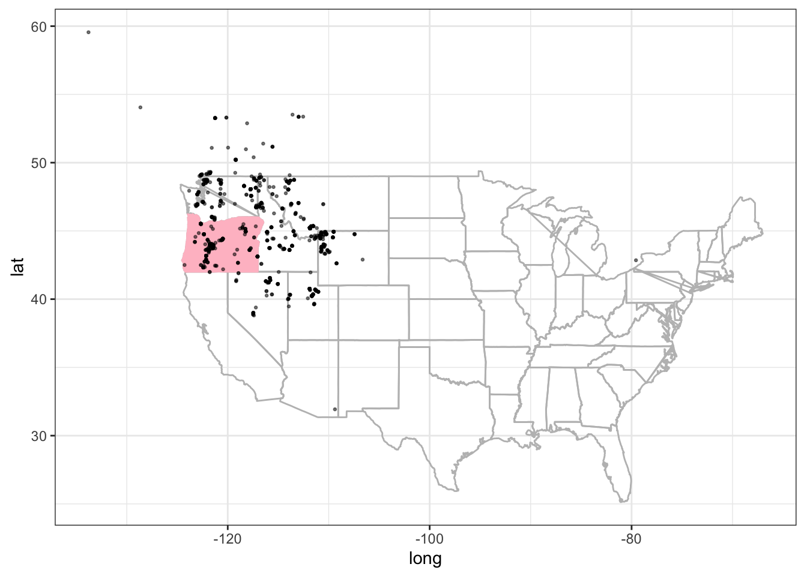

Chapter 3 Case study: Rana Pretiosa
The first case study is about animal ecology, we will be looking at a frog particular specie Rana Pretiosa, scientific name Rana pretiosa Baird & Girard, 1853, and use some interesting data from Oregon as well as downloading more data from GBIF | Global Biodiversity Information Facility.
The scope is to visualize the presence of these nice little frogs across different location with making a map using {ggplot2} by Hadley Wickham.
3.0.1 Get started making a map!
The first map that we make is a general frog location map of the United States. In this case we need the {spocc} package by Hannah Owens and Vijay Barve and Scott Chamberlain, to load the data from GBIF and make the map.
library(tidyverse)
library(oregonfrogs)
library(spocc)load("data/case_study_1.RData")do_gbif <- occ("Rana pretiosa Baird & Girard, 1853",
from = "gbif",
limit = 1000,
has_coords = TRUE
)
do_gbif1 <- data.frame(do_gbif$gbif$data)do_gbif2 <- do_gbif1%>%
rename(longitude=Rana_pretiosa_Baird_._Girard._1853.longitude,
latitude=Rana_pretiosa_Baird_._Girard._1853.latitude)states<- map_data("state")
oregon <- states %>% filter(region=="oregon")
ggplot(data = states, mapping = aes(long,lat,group=region))+
geom_polygon(color="grey",fill=NA) +
geom_polygon(data = oregon,
inherit.aes = TRUE,
color="pink",fill="pink") +
geom_point(data = do_gbif2,
mapping = aes(x=longitude, y=latitude),
inherit.aes = FALSE,
alpha=0.5,size=0.5)+
coord_quickmap() +
theme_bw()
Once visualized, we will be making some assumptions about their movement and habitat use based on the results of a study by Dr. Michael J Adams from the Forest and Rangeland Ecosystem Science Center in Oregon.
More information about this study can be found here: https://doi.org/10.1670/20-060
The dataset has been released for #TidyTuesday 2022 week 31 and can be downloaded here: https://github.com/rfordatascience/tidytuesday/tree/master/data/2022/2022-08-02
Or, you can install the package from github: https://github.com/Fgazzelloni/oregonfrogs
Figure 3.1: Credits: oregonfrogs package
# install.packages("remotes")
remotes::install_github("fgazzelloni/oregonfrogs")One of the most important step of spatial modeling, and modeling in general, is to have a good knowledge of the argument. So, the more we know about Rana Pretiosa the better!
Let’s hear Rana Pretiosa sound: https://amphibiaweb.org/species/5131
More information about Rana pretiosa can be found here:
In particular, we will be looking at the location where rana pretiosa has been located with the use of radio telemetry frequencies in the Crane Prairie Reservoir, which is a man-made lake located about 42 miles (68 km) southwest of Bend in Deschutes County, Oregon, United States.14
An interesting map of the lake with related data can be found here: Lake and Reservoir in Deschutes County in Oregon map data
We will require more packages while performing our analysis.
library(oregonfrogs) Let’s have a look at the data, we have 311 observations and 16 variables which include the habitat type, the date, the radio frequency, and other variables such as gender, type of water, presence of beavers, and if they are captured, located or just visualized.
So, many interesting hypothesis can be done about their movements habitat use.
oregonfrogs%>%head(3)# A tibble: 3 × 16
Site Subsite HabType Surve…¹ Ordinal Frequ…² UTME_83 UTMN_83 Inter…³ Female
<chr> <chr> <chr> <chr> <dbl> <dbl> <dbl> <dbl> <dbl> <dbl>
1 Crane … SE Pond Pond 9/25/2… 268 164. 597369 4846486 0 0
2 Crane … SE Pond Pond 10/2/2… 275 164. 597352 4846487 1 0
3 Crane … SE Pond Pond 10/9/2… 282 164. 597345 4846458 2 0
# … with 6 more variables: Water <chr>, Type <chr>, Structure <chr>,
# Substrate <chr>, Beaver <chr>, Detection <chr>, and abbreviated variable
# names ¹SurveyDate, ²Frequency, ³IntervalOne more interesting information is about the location, in this case a UTM distance (from the Equator or from the North) is provided, and this type of localization is the most suitable for animal location.
The Universal Transverse Mercator (UTM) is a common projection is which preserves local angles and shapes, and divides the Earth into 60 zones of 6 degrees of longitude in width. Each of the zones uses a transverse Mercator projection that maps a region of large north-south extent. 15
Interesting is that it is expressed in meters, so it gives more opportunity in case one wants to consider the distance. For now, we transform these UTM projections into longitude and latitude. For doing this we need the {sf} package by Edzer Pebesma.
Many are the GIS packages available in R to use, and sometime is difficult to make a choice as they are all very useful and interesting.
To transform the UTM values into long and lat we use the sf::st_as_sf() function with some arguments which are compulsory for what we do.
We need to specify where the coordinates are located in our set, and set a CRS or coordinate reference system information.
# Build a tibble with the geo-location information
frogs_coord <- oregonfrogs %>%
dplyr::select(UTME_83, UTMN_83)
# Tranform it to lat and long
frogs_coord <-
frogs_coord %>%
# transform to simple features as geometry
sf::st_as_sf(coords = c(1,2),
crs = "+proj=utm +zone=10") %>%
# utm tranformation to longlat
sf::st_transform(crs = "+proj=longlat +datum=WGS84") %>%
tibble()
frogs_coord%>%head(3)# A tibble: 3 × 1
geometry
<POINT [°]>
1 (-121.7903 43.76502)
2 (-121.7905 43.76503)
3 (-121.7906 43.76477)As you can see the first projection points to utm as the type of data provided and set the zone 10. While the second transformation applies to longlat types projection on WGS84, (World Geodetic System 1984, known as EPSG:4326), which express the degree of longitude and latitude starting from a particular point of view, in this case EPSG:4326.
Figure 3.2: Credits: https://epsg.io/4326
All the available CRS in R can be seen by typing View(rgdal::make_EPSG()) 16
library(purrr)
frogs_location <- tibble(Detection = oregonfrogs$Detection,
Subsite = oregonfrogs$Subsite,
Frequency = oregonfrogs$Frequency,
lat = unlist(map(frogs_coord$geometry, 2)),
long = unlist(map(frogs_coord$geometry, 1)))
frogs_location%>%head(3)# A tibble: 3 × 5
Detection Subsite Frequency lat long
<chr> <chr> <dbl> <dbl> <dbl>
1 Captured SE Pond 164. 43.8 -122.
2 No visual SE Pond 164. 43.8 -122.
3 No visual SE Pond 164. 43.8 -122.